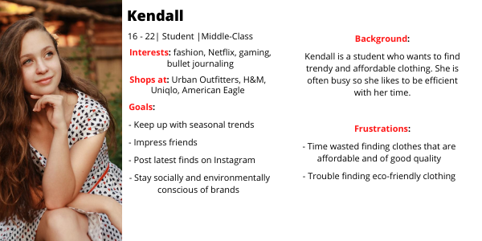

| Team: Alex Feng, Annie Kuang | Tools: Figma, Adobe Illustrator |
| Duration: 5 Weeks | My Role: Lead UX Researcher + Visual Design |
01: Overview
Background
UNIQLO was founded in Yamaguchi, Japan in 1949. It first started as a textiles manufacturer before expanding to the global clothing brand that we know today. Known for their simplistic and quality apparel, no wonder it has amassed so many loyal customers.
The Journey
My journey with the UNIQLO app began when they were having an in-app only promotion for their HEATTECH attire. Like any college student, I could not pass up on free clothing, so I downloaded the app for the first time. Right away, the app felt different from the other apps I was accustomed to - Urban Outfitters, American Eagle, and H&M. I was frustrated with its slow loading time, intrusive pop-ups, and web wrap UI. I realized that others felt the same way, so I embarked on this journey to fix some of these issues.
02: User Research
User Testing and Surveys
To understand user paint points and the user journey, I asked users to freely use the app while screen recording. Afterwards, I instructed them to answer some questions about their experience. Here are some of the questions below:
Results
Below is one of the user journeys that I found interesting. This user, like the others, was frustrated with the return feature. Instead of utitilizing the back button that is displayed on the top left, they had to resort to clicking the logo which returned back to the home screen.
After interviewing the other 8 participants and analyzing their videos, I was able to understand some of their pain points and frustrations with using the app. Here are some of the key takeaways from the findings:

I realized that many of their frustrations came from the app's navigation which they found confusing to complete tasks. They had a hard time interacting with interface because the web-wrapping and pop-up messages made it inconvenient. They also never interacted with the app's others features like Blog, Store Locator, and My Account, because they were on the app solely to browse and not buy. The navigation on the top was also left untouched, because they saw no need to use it.
However, there were some features that the users did enjoy using - coupons, store availability, categories. After organizing the data into the affinity diagram, I was ready to create a persona to further understand the users' needs and demands.

User research led me to conclude that improving navigation and eliminating redudancy were at heart of user pains. The app had many features that either users were not aware of or did not find a use for. This meant making the UI clear and concise to improve their experiences.
03: Wireframing
I began with low fidelity wireframes to get a general direction of the redesign. My main concern was making the UI simplistic and consistent not only to improve the UX but to also be consistent with UNIQLO's brand.

Once I got a sense of the layout and aesthetic, I moved onto mid-fidelity wireframes. Here, I continued designing the other pages and began structuring them with content.
04: Prototype
After creating the mid-fidelity wireframes, I started to design a working prototype. I made sure to be consistent with UNIQLO's minimalistic UI.
05: Reflection
This was my first UI/UX case study and it was an exciting and fun project to work on. I learned a lot about user research and its great importance in design. I also really enjoyed the visual design process and got better at using Figma and Adobe Illustrator. Here are my key takeaways from this project:
- Don't rush the process. This was my first project so I was very eager to show what I knew. Instead, I should have taken more time in between each step to fully analyze my data.
- Focus more on UX. I spent too much time on prototyping and creating a beautiful redesign. Design is more than just pretty visuals, but a focus on the users and their thinking.
Nevertheless, I'm proud of what I did and this was a great learning experience. I look forward to my next project and improving my design skills.